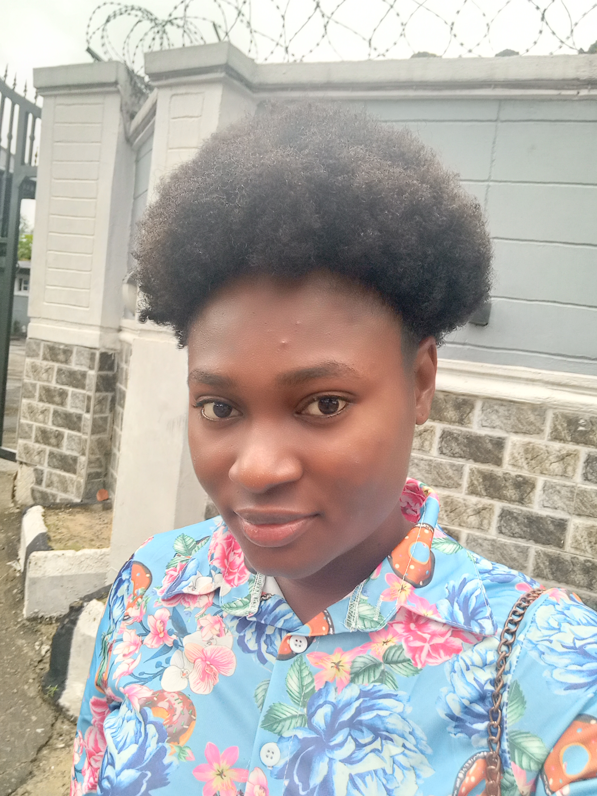

I am a driven individual with a strong background in Chemical Engineering, having earned my degree from the Federal University of Petroleum Resources Effurun (FUPRE). Currently, I am engaged as a Research Assistant at the esteemed LINKR Research Team, where I assist with writing dissertations/thesis, articles, SOPs and others. In addition to my academic achievements, I am a dedicated Crypto Enthusiast. I am currently learning Front-End and Back-End development. I reside at the Juno Living Lite house in Akoka, Lagos-Nigeria. I am enthusiastic about learning, growth, and the endless possibilities that the world of technology offers.
To connect with me via LINKEDIN, click here